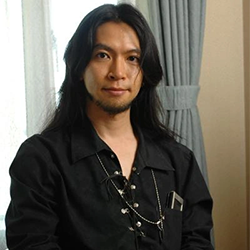

Series creator Daisuke Ishiwatari is hands-on with every part of Guilty Gear: he works on designing, writing, and producing the games. It's safe to say any part of a Guilty Gear game has had Daisuke's touch added to it. One of his most impactful roles, however, is his work composing music.
Daisuke's love for all kinds of rock and metal comes through in all of his works. He takes plenty of inspiration from Queen--Sol Badguy's favorite album. He doesn't limit himself to that, though: he experiments with all sorts of genres, including David Bowie-esque ballads, speed metal, pop punk, and progressive rock.
The music is a huge part of Guilty Gear's identity, but Daisuke imbues his musical energy into every part of the series. One of the series' major antagonists, I-No, is designed after the holographic colors of a CD. Other characters include Axl Low, Slayer (as in the band), and Elphelt's motifs of Guns & Roses. The magic system of Guilty Gear is based entirely on music: spells are 'tuned' with 'chords.' Guilty Gear is a fighting game, but it's really a series about love and rock.
"Freesia" (Guilty Gear Xrd) is an epic ballad hearkening back to Daisuke's love for Freddy Mercury.
"Holy Orders ~Be Just Or Be Dead~" (Guilty Gear) is one of Daisuke's most popular pieces, full of shredding guitars.
"Disaster of Passion" (Guilty Gear Strive) instantly became a fan favorite for its Paramore-esque sound.